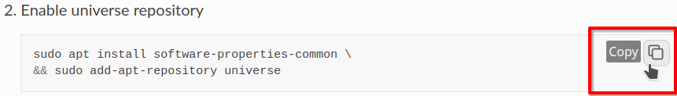

Install ROS
The ROS documentation provides a complete installation guide. The following instructions are a summary of their article.
Attention
Since Ubuntu 18.04, Canonical decided it was a good idea to have unattended updates running in the background. This might lead to error messages similiar to:
E: Could not get lock /var/lib/dpkg/lock-frontend - open (11: Resource temporarily unavailable)
E: Unable to acquire the dpkg frontend lock (/var/lib/dpkg/lock-frontend), is another process using it?
If you encounter them after running anything related to apt: no worries. Just wait until the backgroud updates are finished.
Hint
We use copy-buttons, i.e. a copy-button appears when you hover over a code-block. This makes copy-pasting easier than manually selecting the code-block.
Preparation
Enable universe repository
sudo apt install software-properties-common \ && sudo add-apt-repository universe
Add the key
sudo apt update && sudo apt install curl -y \ && sudo curl -sSL https://raw.githubusercontent.com/ros/rosdistro/master/ros.key -o /usr/share/keyrings/ros-archive-keyring.gpg
Add sources
echo "deb [arch=$(dpkg --print-architecture) signed-by=/usr/share/keyrings/ros-archive-keyring.gpg] http://packages.ros.org/ros2/ubuntu $(. /etc/os-release && echo $UBUNTU_CODENAME) main" | sudo tee /etc/apt/sources.list.d/ros2.list > /dev/null
Update
Warning
This is critial!
sudo apt update && sudo apt upgrade -y
Installation
Install ROS
sudo apt install ros-humble-desktop-full
Install build dependencies
sudo apt install ros-dev-tools python3-pip python3-rosdep
Set up
rosdepsudo rosdep init && rosdep update
Source the ROS installation
echo 'source /opt/ros/humble/setup.bash' >> ~/.bashrc
Apply the changes to your
.bashrcEither close and reopen all open terminals or run the following command in all terminals:
. ~/.bashrc
A Brief Test
Managed to follow the instructions until here? To give you a bit of a good feeling, we try to run the following command
ros2 run turtlesim turtlesim_node
A window appears? Lucky you! If not try to figure out what went wrong or ask your favorite research associate for help.
You can stop the program with Ctrl + C.